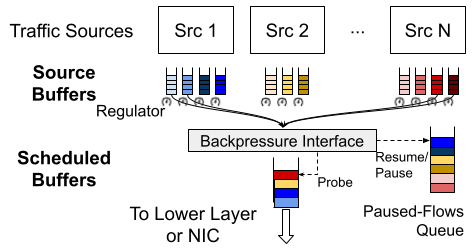
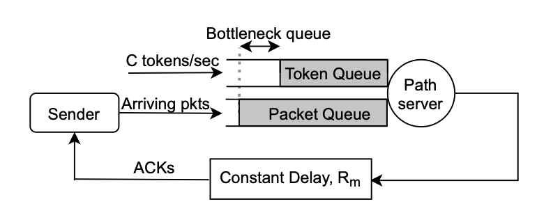

Ahmed Saeed
Assistant Professor
School of Computer Science
College of Computing
Georgia Institute of Technology
asaeed [@] cc [.] gatech [.] edu
News (scroll for more)
- Started as an Assistant Professor at Georgia Tech! August, 2021
-
Paper accepted to SIGCOMM
May, 2021
CCAC is a new approach to understanding the performance of congestion control algorithms through formal methods.
-
Paper accepted to MobiSys
March, 2021
Mobius allows operators of large fleets of vehicles to navigate the tradeoffs between task fulfillment throughput and fairness to their customers.
- Paper presented at PAM March, 2021
-
Paper accepted to PAM '21
December, 2020
In this paper, we provide a thorough analysis of the bottlenecks that arise in the Linux kernel running on a server as we increase the number of TCP connections handled by the server.
-
Paper accepted to OSDI '20
August, 2020
Breakwater is an overload control system that allows microsecond-scale RPCs to maintain their Service Level Objectives (SLOs) even when their demand is much larger than available capacity.
-
Paper accepted to SIGCOMM '20
August, 2020
We identify a new problem in WAN congestion control when WAN traffic competes for bandwidth with datacenter traffic inside the datacenter network. Annulus solves the problem by allowing WAN traffic to react to congestion as fast as datacenter traffic using explicit and direct congestion notification messages.
Bio
Ahmed Saeed is an Assistant Professor in the School of Computer Science at Georgia Tech. He was a Postdoctoral Associate at MIT working with Prof. Mohammad Alizadeh. He completed his PhD in August 2019 at Georgia Tech, where he was advised by Prof. Mostafa Ammar and Prof. Ellen Zegura. During his PhD, he interned several times at Google, where he collaborated with Nandita Dukkipati and Amin Vahdat. He received his bachelor's degree in Computer and Systems Engineering from Alexandria University in 2010.
I am looking for highly motivated students interested in building and understanding large-scale systems and networks.
Research Interests
Theory, design, and implementation of scalable computer networks and computer systems, including resource scheduling, congestion control, wireless networks, and cyber-physical systems.
Active projects (more details here):
Scalable End Host Networking
The goal of the project is develop end-host networking stacks that can scale, not only in terms of their messages per second capacity, but in terms of the number of network connections they can handle. To that end, we tackle problems in schedulers, the VM-hypervisor API, and the transport layer.
WAN Congestion Control

Wide area networks (and the Internet at large) are getting more heterogeneous and programmable, proving to be a challenging environment to manage while providing many new knobs to provide better performance. To that end, we explore new tools to better characterize the challenges and new algorithms to address them.
Formal Verification of Performance Properties of Distributed Systems
This project attempts to provide concrete analytical tools to understand the performance of heuristics used in resource allocation and management of distributed system. The project leverages progress made in formal verification tools (e.g., Z3) that can efficiently search through all potential scenarios that can encounter a heuristic. We use such tools to identify scenarios where systems underperform, helping system designers avoid them or plan for them.
Selected Publications (full list)
Formally Verifying Congestion Control Performance
Venkat Arun, Mina Tahmasbi Arashloo, Ahmed Saeed, Mohammad Alizadeh, Hari Balakrishnan
ACM SIGCOMM 2021 [PDF] [Code] [Video]Annulus: A Dual Congestion Control Loop for Datacenter and WAN Traffic Aggregates
Ahmed Saeed, Varun Gupta, Prateesh Goyal, Milad Sharif, Rong Pan, Mostafa Ammar, Ellen Zegura, Keon Jang, Mohammad Alizadeh, Abdul Kabbani, and Amin Vahdat
ACM SIGCOMM 2020 [PDF] [Slides] [Video]Overload Control for μs-scale RPCs with Breakwater
Inho Cho, Ahmed Saeed, Joshua Fried, Seo Jin Park, Mohammad Alizadeh, Adam Belay
USENIX OSDI 2020 [PDF] [Video] [Code]Eiffel: Efficient and Flexible Software Packet Scheduling
Ahmed Saeed, Yimeng Zhao, Nandita Dukkipati, Ellen Zegura, Mostafa Ammar, Khaled Harras, and Amin Vahdat
USENIX NSDI 2019 [PDF] [Extended Version] [Slides] [Video] [Code]Carousel: Scalable Traffic Shaping at End Hosts
Ahmed Saeed, Nandita Dukkipati, Vytautas Valancius, Vinh The Lam, Carlo Contavalli, and Amin Vahdat
ACM SIGCOMM 2017 [PDF] [Slides] [Video]
Students
- Snigdha Grandhi (MSc)
- Saubhik Mukherjee (MSc)
- Prabhav Srinath (MSc)
- Sanya Verma (Undergrad)
Teaching
- Spring 2022: Datacenter Networks & Systems (CS 8803)
- Fall 2021: Computer Networking I (CS 3251)